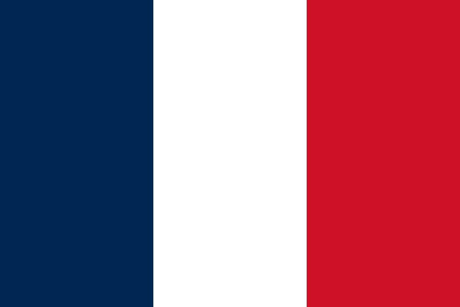
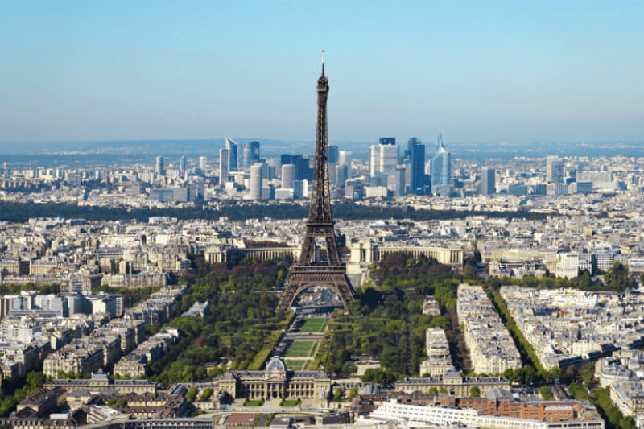
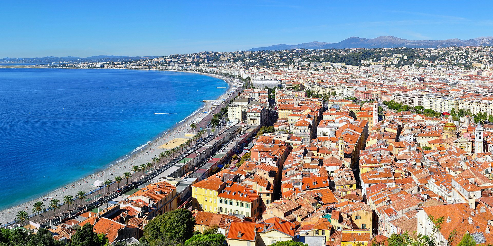
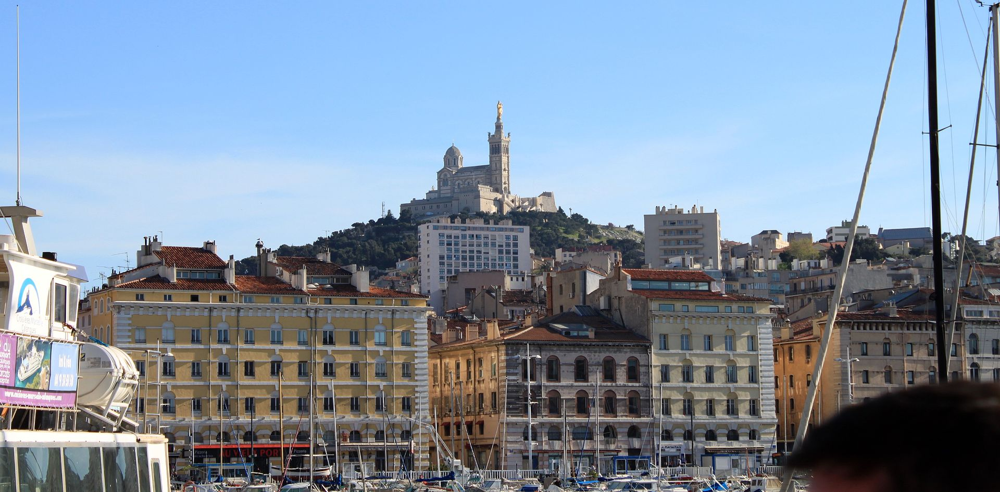

France

France, a country in Western Europe, has medieval towns, alpine villages and beaches. Paris, its capital, is famous for its fashion houses, its classical art museums, including the Louvre, and its monuments such as the Eiffel Tower. The country is also renowned for its wines and fine cuisine. The cave paintings in the caves of Lascaux, the Roman theater in Lyon and the immense Palace of Versailles testify to its rich history.
Cities

Paris, capital of France, is a major European city and a world center for art, fashion, gastronomy and culture. Its 19th century urban landscape is crossed by wide boulevards and the Seine. Besides landmarks like the Eiffel Tower and the 12th-century Gothic Notre-Dame Cathedral, the city is renowned for its cafes and luxury boutiques lining Rue du Faubourg-Saint-Honoré.

Nice, is the prefecture of the Alpes-Maritimes department in France. The Nice agglomeration extends far beyond the administrative city limits, with a population of nearly 1 million on an area of 744 km2 (287 sq mi). Located on the French Riviera, the southeastern coast of France on the Mediterranean Sea, at the foot of the French Alps, Nice is the second-largest French city on the Mediterranean coast and second-largest city in the Provence-Alpes-Côte d'Azur region after Marseille.

Marseille, is the prefecture of the French department of Bouches-du-Rhône and capital of the Provence-Alpes-Côte d'Azur region. Situated in the camargue region of southern France, it is located on the coast of the Gulf of Lion, part of the Mediterranean Sea, near the mouth of the Rhône river. Its inhabitants are called Marseillais.